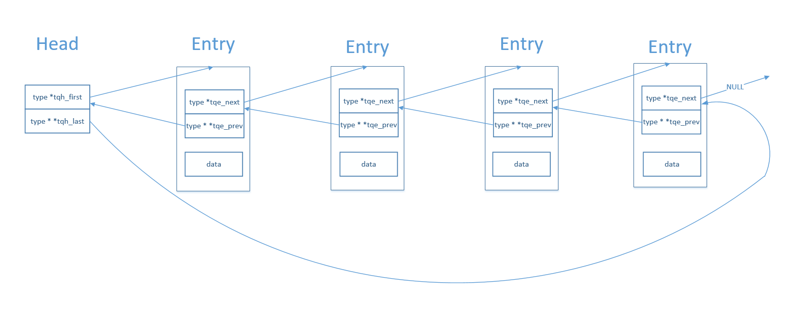

libevent源码–TAILQ队列
1 TAILQ 队列结构图

其中
- tqh_first 指向队列的第一个结点
- tqh_last 指向队列的最后一个结点的 tqe_next 字段
- tqe_next 指向该结点的下一个结点
- tqe_prev 指向该结点的上一个结点的 tqe_next 字段
根据结构图，TAILQ 队列为双向循环链表
2 TAILQ 队列源码
// 定义队列的头结点结构体的宏 #define TAILQ_HEAD(name, type) \ struct name { \ struct type *tqh_first; /* first element */ /* 指向队列的第一个元素 */ \ struct type **tqh_last; /* addr of last next element */ /* 指向队列最后一个元素的 tqe_next 的地址 */ \ } #define TAILQ_HEAD_INITIALIZER(head) \ { NULL, &(head).tqh_first } // 这个结构体是队列中元素的一个指针字段，它指向下面这个匿名结构体，该结构体保存着 2 个指针 #define TAILQ_ENTRY(type) \ struct { \ struct type *tqe_next; /* next element */ /* 指向下一个元素 */ \ struct type **tqe_prev; /* address of previous next element */ /* 指向上一个元素的 tqe_next 的地址 */ \ } /* * tail queue access methods */ #define TAILQ_FIRST(head) ((head)->tqh_first) #define TAILQ_END(head) NULL #define TAILQ_NEXT(elm, field) ((elm)->field.tqe_next) // 获取队列的下一个元素的指针 // (head)->tqh_last 表示队列中最后一个元素的 tqe_next 的地址，也即是 TAILQ_ENTRY(type) 的地址 // (struct headname *)((head)->tqh_last) 表示把 TAILQ_ENTRY(type) 的地址转化成 TAILQ_HEAD(name, type) 的地址，因为它们在内存上空间布局相同，可以互转 // (((struct headname *)((head)->tqh_last))->tqh_last) 经过上一步的类型转换，tqh_last 相当于 TAILQ_ENTRY(type) 的 tqe_prev。表示队列中倒数第二个元素的 tqe_next 的地址 // (*(((struct headname *)((head)->tqh_last))->tqh_last)) 表示指向最后一个元素的指针，类型为 struct type * #define TAILQ_LAST(head, headname) \ (*(((struct headname *)((head)->tqh_last))->tqh_last)) /* XXX */ #define TAILQ_PREV(elm, headname, field) \ (*(((struct headname *)((elm)->field.tqe_prev))->tqh_last)) #define TAILQ_EMPTY(head) \ (TAILQ_FIRST(head) == TAILQ_END(head)) // 遍历队列的宏 #define TAILQ_FOREACH(var, head, field) \ for((var) = TAILQ_FIRST(head); \ (var) != TAILQ_END(head); \ (var) = TAILQ_NEXT(var, field)) #define TAILQ_FOREACH_REVERSE(var, head, headname, field) \ for((var) = TAILQ_LAST(head, headname); \ (var) != TAILQ_END(head); \ (var) = TAILQ_PREV(var, headname, field)) /* * Tail queue functions. */ #define TAILQ_INIT(head) do { \ (head)->tqh_first = NULL; \ (head)->tqh_last = &(head)->tqh_first; \ } while (0) // 在队列头插入元素 elm #define TAILQ_INSERT_HEAD(head, elm, field) do { \ if (((elm)->field.tqe_next = (head)->tqh_first) != NULL) \ (head)->tqh_first->field.tqe_prev = \ &(elm)->field.tqe_next; \ else \ (head)->tqh_last = &(elm)->field.tqe_next; \ (head)->tqh_first = (elm); \ (elm)->field.tqe_prev = &(head)->tqh_first; \ } while (0) // 在队列 head 的尾部插入元素 elm #define TAILQ_INSERT_TAIL(head, elm, field) do { \ (elm)->field.tqe_next = NULL; \ (elm)->field.tqe_prev = (head)->tqh_last; \ *(head)->tqh_last = (elm); \ (head)->tqh_last = &(elm)->field.tqe_next; \ } while (0) // 在队列 head 的 listelm 的后面插入元素 elm #define TAILQ_INSERT_AFTER(head, listelm, elm, field) do { \ if (((elm)->field.tqe_next = (listelm)->field.tqe_next) != NULL)\ (elm)->field.tqe_next->field.tqe_prev = \ &(elm)->field.tqe_next; \ else \ (head)->tqh_last = &(elm)->field.tqe_next; \ (listelm)->field.tqe_next = (elm); \ (elm)->field.tqe_prev = &(listelm)->field.tqe_next; \ } while (0) // 在元素 listelm 前面插入 elm #define TAILQ_INSERT_BEFORE(listelm, elm, field) do { \ (elm)->field.tqe_prev = (listelm)->field.tqe_prev; \ (elm)->field.tqe_next = (listelm); \ *(listelm)->field.tqe_prev = (elm); \ (listelm)->field.tqe_prev = &(elm)->field.tqe_next; \ } while (0) // 在队列 head 中删除元素 elm // 注意：需要在之后释放 elm #define TAILQ_REMOVE(head, elm, field) do { \ if (((elm)->field.tqe_next) != NULL) \ (elm)->field.tqe_next->field.tqe_prev = \ (elm)->field.tqe_prev; \ else \ (head)->tqh_last = (elm)->field.tqe_prev; \ *(elm)->field.tqe_prev = (elm)->field.tqe_next; \ } while (0) // 在队列 head 中用 elm2 替换 elm // 注意：需要在之后释放 elm #define TAILQ_REPLACE(head, elm, elm2, field) do { \ if (((elm2)->field.tqe_next = (elm)->field.tqe_next) != NULL) \ (elm2)->field.tqe_next->field.tqe_prev = \ &(elm2)->field.tqe_next; \ else \ (head)->tqh_last = &(elm2)->field.tqe_next; \ (elm2)->field.tqe_prev = (elm)->field.tqe_prev; \ *(elm2)->field.tqe_prev = (elm2); \ } while (0)
3 注意
为什么宏 TAILQ_LAST 和 TAILQ_PREV 中将 (head)->tqh_last) 转换为 TAILQ_HEAD 而不是转换为 TAILQ_ENTRY?
是因为 TAILQ_ENTRY 这个结构体是匿名结构体，它直接定义在你用户定义的结构体中，无法获取他的类型名来进行转换。
又因为 TAILQ_ENTRY 和 TAILQ_HEAD 在内存上的空间布局是相同的，所以…
4 TAILQ 队列的使用
#include <stdio.h> #include <stdlib.h> #include "queue.h" // TAILQ 源码写到 queue.h 文件中了 struct item { int value; TAILQ_ENTRY(item) entries; }; TAILQ_HEAD(queue_item, item) queue; int main() { struct item *elem, *elem2; TAILQ_INIT(&queue); if(TAILQ_EMPTY(&queue)) printf("The queue is null now\n"); // 插入元素 0 1 2 3 4 5 6 7 8 9 for(int i = 0; i < 10; i++) { elem = (struct item*)malloc(sizeof(struct item)); elem->value = i; TAILQ_INSERT_TAIL(&queue, elem, entries); } // 0 1 2 3 4 5 6 7 8 100 9 elem2 = (struct item*)malloc(sizeof(struct item)); elem2->value = 100; TAILQ_INSERT_BEFORE(elem, elem2, entries); // 200 0 1 2 3 4 5 6 7 8 100 9 elem2 = (struct item*)malloc(sizeof(struct item)); elem2->value = 200; TAILQ_INSERT_HEAD(&queue, elem2, entries); // 200 2000 0 1 2 3 4 5 6 7 8 100 9 elem = elem2; elem2 = (struct item*)malloc(sizeof(struct item)); elem2->value = 2000; TAILQ_INSERT_AFTER(&queue, elem, elem2, entries); // 删除结点/替换结点 elem = elem2->entries.tqe_next; elem2 = elem->entries.tqe_next; // 200 2000 1 2 3 4 5 6 7 8 100 9 TAILQ_REMOVE(&queue, elem, entries); free(elem); elem = (struct item*)malloc(sizeof(struct item)); elem->value = 11; // 200 2000 11 2 3 4 5 6 7 8 100 9 TAILQ_REPLACE(&queue, elem2, elem, entries); free(elem2); // 访问结点 elem = TAILQ_FIRST(&queue); printf("The first element is %d \n", elem->value); elem = TAILQ_NEXT(elem, entries); printf("The second element is %d\n", elem->value); elem = TAILQ_LAST(&queue, queue_item); printf("The last element is %d\n", elem->value); elem = TAILQ_PREV(elem, queue_item, entries); printf("The second last element is %d\n", elem->value); // 遍历队列 TAILQ_FOREACH(elem, &queue, entries) printf("%d ", elem->value); printf("\n"); // 逆序遍历 TAILQ_FOREACH_REVERSE(elem, &queue, queue_item, entries) printf("%d ", elem->value); printf("\n"); return 0;